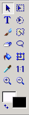
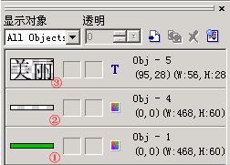
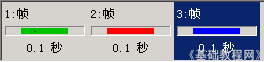

Ulead Gif Animator 基础教程
一、认识窗口 返回
Ulead Gif Animator 是友立公司出品的一款动画制作软件，用它可以很方便的制作出Gif图片来，下面我们来认识一下它的窗口；
1、安装
1）原版的Ulead Gif Animator是英文版的，可以在它的主页上下载15天的试用版，也可以在华军下载：http://www.onlinedown.net/soft/579.htm
2）我们一般使用汉化版或安装汉化包来学习，http://www.onlinedown.net/soft/580.htm
3）安装版会在桌面放置一个快捷图标，绿色版的解压后在文件夹中找到一个绿色地球图标，自己创建一个快捷方式；
2、启动
1）双击这个绿色地球图标，即可启动Ulead Gif Animator，打开一个窗口，中间有一个向导对话框；

这儿可以选中左下角的复选框，然后下次就不出现这个对话框了
3、窗口
1）进入默认窗口后，中间的工作区里是一个白色的长条，边上有一圈虚线，表示选中状态，鼠标一进去后变成黑色的移动指针；
2）窗口左边是工具箱，里面有选择工具和绘图工具，制作动画的时候可以按要求选择；
 把鼠标移到工具按钮上，就会出来一个提示，
第一个箭头是选择工具，第二排的T是文字工具，下面的是画笔和橡皮擦工具，
右边一列主要是其他选择工具，像框选、圆形选区、魔术棒选区和套索选区；
油漆桶工具可以给一个选区里头填充颜色，
下面的两个颜色块，白色是背景色，黑色是前景色，点击后可以选取其他颜色；
3）窗口右边是对象窗口，工作区中每个内容都会显示在这儿，用它还可以在原来图像上新添加一个图层；

第1层是背景层，第2层是空白层，第3层是文字层，这样互不干扰便于修改；
4）窗口下边是帧面板，帧相当于一个一个的小格，每一帧里可以放一幅图像，许多帧图像连续播放就可以形成动画；

帧面板的下边是各个命令按钮，可以播放图像，添加帧、删除帧，和帧属性等；
练习：
看一下Ulead Gif Animator窗口，说一下它的三个组成部分各是什么；
本教程由86团学校TeliuTe制作|著作权所有转载和引用本站内容，请保留版权信息和本站链接。